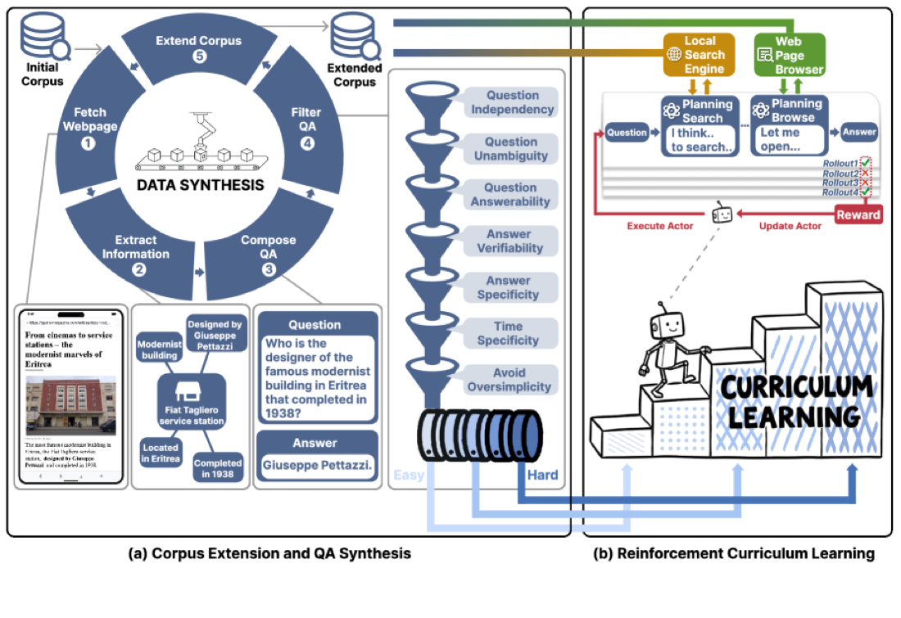
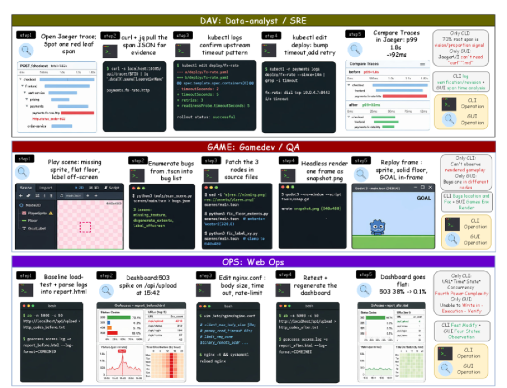
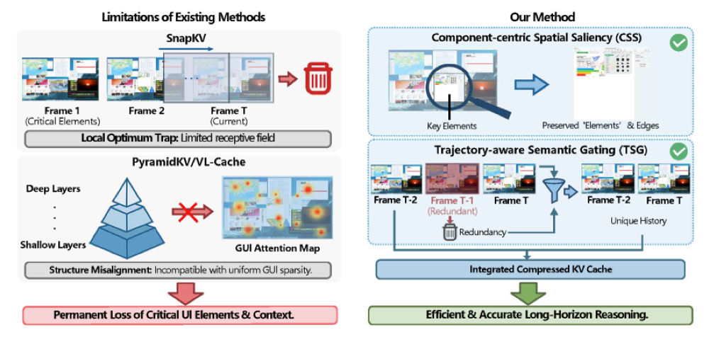
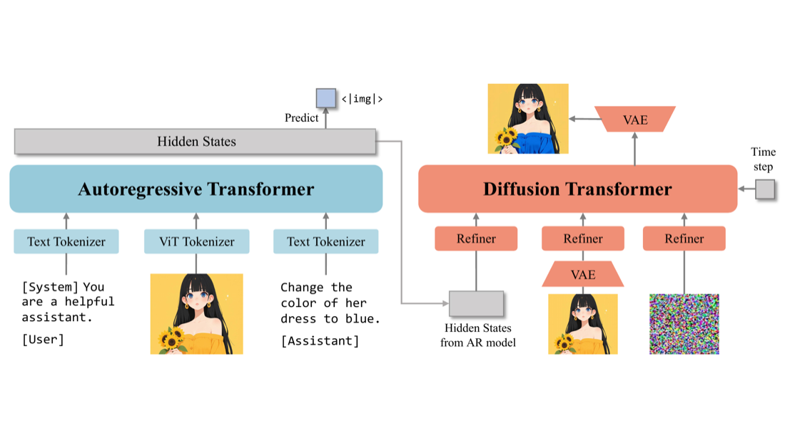
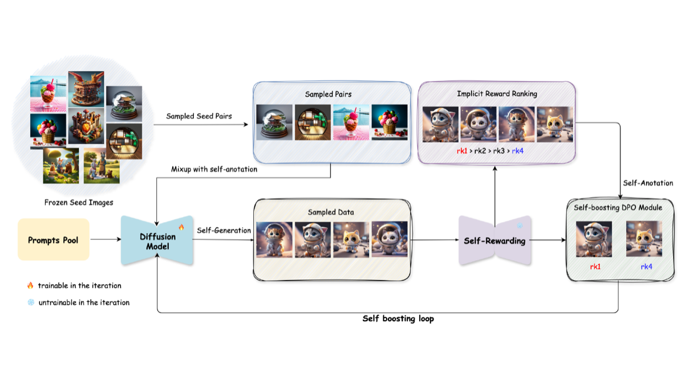
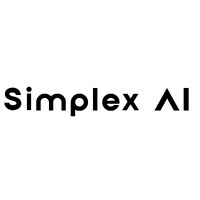
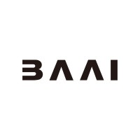

My research interest lies in the intersection of Reinforcement Learning, Reasoning and Machine Learning Systems, with their applications in complex, real-world environments. My long-term goal is to create an autonomous decision-making system that can act intelligently in any unknown environment.
I am also interested in multimodal generation and its alignment. Currently a research intern at Microsoft Research Asia, previously at BAAI and SimplexAI.
I'm always open to research collaboration. Feel free to reach out if you'd like to work together.
Research
My work spans three threads. * denotes equal contribution.
Agentic Reinforcement Learning
Training agents to reason and act over long horizons with scalable, stable RL.

Generalist Computer-Use Agents
Agents that operate real desktops across GUI, CLI and code — and how we evaluate them.

WeaveBench: Benchmarking Hybrid-Interface Computer-Use Agents
First Author Preprint 2026
A long-horizon benchmark of 114 hybrid-interface tasks forcing GUI and CLI/code to cooperate — the best agent reaches only 41.2% success.

ST-Lite: Training-Free KV Cache Compression for Efficient GUI Agents
Co-first Preprint 2026
A training-free KV cache compression for GUI agents, giving 2.45× decoding speedup and +7.3% success on long-horizon tasks.
Multimodal Generation
Unified multimodal models and RL alignment for generation.

OmniGen2: Towards Instruction-Aligned Multimodal Generation
CVPR 2026 332 Citations · 4.1k GitHub Stars
A unified multimodal generation model; I built the in-context data pipeline and led the progressive Flow-GRPO RL alignment.

TempFlow-GRPO: When Timing Matters for GRPO in Flow Models
ICLR 2026
A temporally-aware RL framework for flow-matching models, using trajectory branching and noise-aware weighting for stabler alignment.

SAIL: Self-Amplified Iterative Learning for Diffusion Model Alignment
Co-first ICLR 2026
A self-amplified iterative framework that aligns diffusion models from minimal seed data, letting the model act as its own teacher.
News
- 2026.03 Started a research internship at Microsoft Research Asia.
- 2026.02 OmniGen2 accepted by CVPR 2026.
- 2026.01 SAIL and TempFlow-GRPO accepted by ICLR 2026.
- 2025.09 Started my PhD at Zhejiang University.
Talks
- 2026.07 WeaveBench: Benchmarking Hybrid-Interface Computer-Use Agents Hunyuan Frontier Lab
- 2026.07 LiteResearcher: Scalable Agentic RL for Deep Research Agents AgenticAICon 2026
Experience

Research Intern · Shanghai AI/ML Group
Full-stack hybrid-interface Computer-Use Agents: VM sandbox infra, fully-async Agentic RL training, and the WeaveBench benchmark.
Advisors: Caihua Shan, Yifan Yang


Research Intern · VectorSpaceLab — Core Contributor
Core contributor to OmniGen2 (4k★): the in-context data pipeline and progressive Flow-GRPO RL alignment.
Advisors: Zheng Liu, Shitao Xiao
Skills
Education
-
 Zhejiang University — PhD in Computer Science, State Key Lab of CAD&CG 2025 – Present
Zhejiang University — PhD in Computer Science, State Key Lab of CAD&CG 2025 – Present
Advised by Prof. Bo Zhang -
Dalian University of Technology — BEng in Artificial Intelligence, IIAU Lab 2021 – 2025
Advised by Prof. Huchuan Lu and Prof. Lijun Wang
Honors
- National Silver Award, China International College Students' Innovation Competition (“Internet+”), 2023
- National Scholarship (Top 1%) — Ministry of Education, 2022 & 2025
- Yulan Scholarship (Top 10 university-wide, highest honor) — DUT, 2024
- Outstanding Graduate of Liaoning Province, 2024